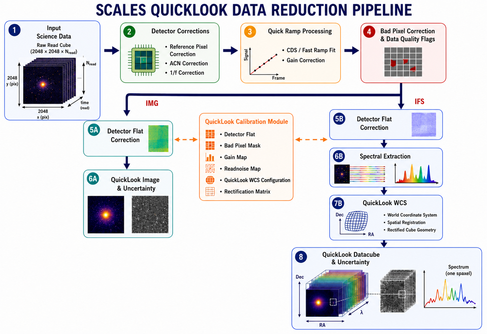
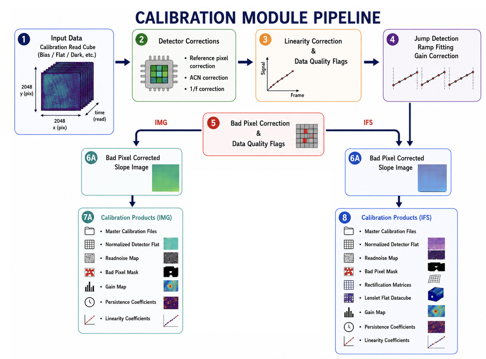
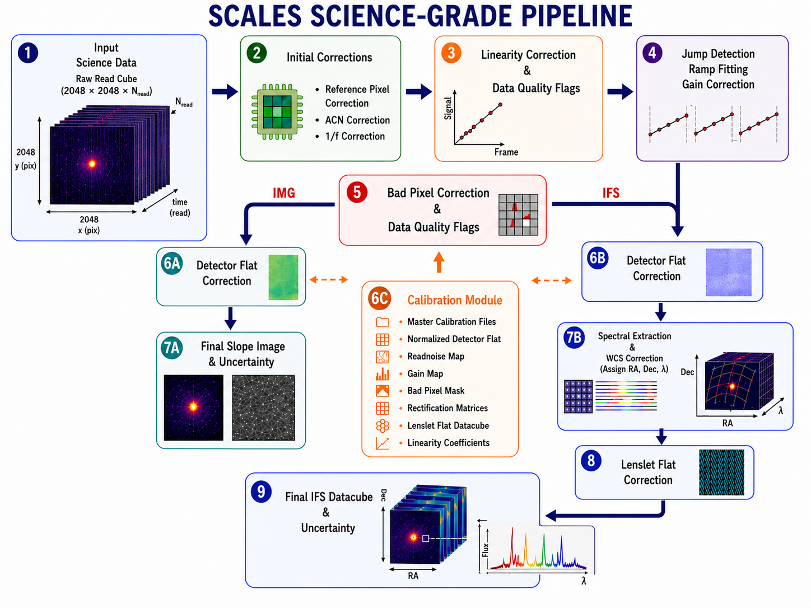

Modes of DRP Operation & the Execution
The DRP consists of three main modules: (1) a calibration module, (2) a quicklook module, and (3) a science grade module. More details of modules and the data reduction steps involved are given below.
Quicklook Pipeline
The quicklook module is used for real-time analysis during observations. It performs Reference Pixel Correction and 1/f Noise Correction corrections, followed by pixel-by-pixel ramp fitting using a first-order polynomial and rectification-based Bad pixel correction.
For imaging mode, quicklook automatically displays the raw image and the final bad-pixel-corrected slope image. For IFS mode, in addition to the slope image, it displays a 3D data cube generated using fast Optimal Extraction with an existing Rectification matrix created by the Calibration Pipeline.
The quicklook module is designed for rapid automatic execution, allowing users to interactively visualize individual exposures and final 3D IFS data cubes through GUIs during observations. Typically, it takes approximately 0.2–0.3 seconds to produce the data cube.
The quicklook pipeline continuously searches the input folder for newly arriving FITS files and produces slope images as they are detected. Once each analysis is complete, it waits indefinitely for the next FITS file to arrive.
A user can access the Quicklook Pipeline using the following command.
start_scales_quicklook -m -W -d FULL PATH
Here -m indicate monitoring, -W indicates wait for ever, and -d for directory. More details can seen here. The module will wait for the next file to arrive and analysis as they arrive. In real time observations, the quicklook module is integrated with the SCALES server and do analysis as the data readsout.
{kind=link}

A flowchart of the SCLAES-DRP quicklook module.
Calibration Pipeline
The calibration module is the core component of the SCALES-DRP. It automatically processes dark, detector flat, monochromatic calibration lamp, and bias exposures using the sequence of processing steps described in Primitives.
The calibration module produces two categories of output products. The first category consists of daily master calibration products generated by sigma-clipped median combining multiple calibrated slope images. These include master detector flats, dark frames, and bias frames for both the imaging and IFS detectors.
The second category consists of calibration reference products that are not regenerated on a daily basis, but are instead monitored periodically by WMKO staff and updated as needed. These include rectification matrices and lenslet flats for each IFS observing mode derived from master monochromatic calibration exposures, read-noise maps generated from master bias frames, gain maps derived from flat-field exposures, persistence measurements from sequences of dark and detector flat exposures, and bad pixel maps derived from master dark and detector flat frames. Detector-level corrected flat exposures are also used to derive detector non-linearity correction coefficients and the associated data quality (DQ) flag maps.
Monochromatic calibration data are acquired less frequently because the optical geometry of the instrument is expected to remain stable over much longer timescales than the detector calibrations. These exposures are used to generate the rectification matrices required for spectral extraction and wavelength calibration. The rectification matrices encode the detector response of every lenslet PSF (psflet) as a function of wavelength, providing the mapping between detector pixels and the reconstructed three-dimensional data cube.
A small number of monochromatic calibration exposures are acquired each time the instrument configuration is changed. These exposures are used to measure and correct for instrument flexure on a daily basis.
{kind=link}

A flowchart of the SCLAES-DRP calibration module.
A user can execute the Calibration Pipeline using the following command:
start_scales_calib -d FULL PATH
where -d stands for directory followed by the full path to the directory with calibration files.
Note
The calibration module should be executed before running the science-grade pipeline to ensure that all required calibration products are available.
Start the calibration module only after the afternoon calibration observations have been completed.
Science-Grad Pipeline
The science module processes science exposures by applying the detector-level corrections described in Primitives, followed by ramp fitting, bad pixel correction, and spectral extraction. Using the calibration products generated by the calibration module, it produces calibrated slope images and wavelength-calibrated three-dimensional IFS data cubes.
{kind=link}

A flowchart of the SCLAES-DRP science-grad module.
A user can execute the science-grad pipeline using the following command:
For execting a single FITS file (make sure to execute inside the directory.):
start_scales_calib -f filenmae.fits
Here
-fstands for a file.For execting a list of FITS file (make sure to execute inside the directory.):
start_scales_calib -l list.txt
Here
-lstands for a text file with a list of FITS file name to process.For execting for all FITS files in a directory:
start_scales_calib -d FULL PATH
Here
-dstands for a the directory.